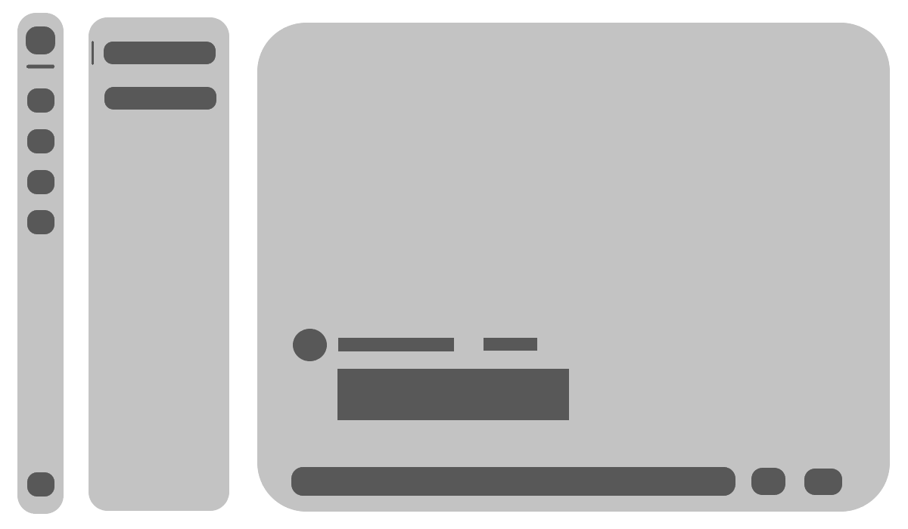

StarChat
- Connect the world -
一对一 好友私聊
使用熟悉的语言，熟悉的方式

百人开团 群组混战
文字？图片？动图？emoji？视频？语音？统统收入囊中！
WebSite Made By Searchstars / StarChat development team presents 2023
Background image create by stable-diffusion (Anything-v4.5 cpkt and vae.pt + DPM++ 2S a Karras + Sampling steps 60 + CFG Scale 7 + Prompt="masterpiece, best quality, scenery, air, night, sky, prevalent, illusion" + Negative Prompt="nsfw, buildings, lands, ground")